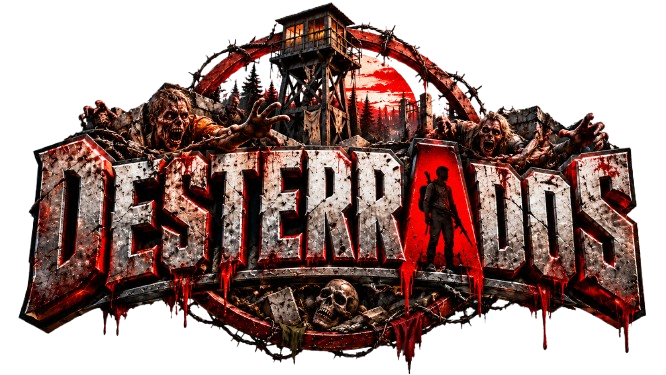
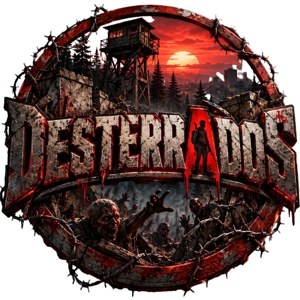

◎
Roleplay
TU PERSONAJE. TU HISTORIA.
Cada encuentro puede cambiar tu destino. Dale una voz a tu personaje, crea vínculos y convierte la supervivencia en una historia compartida.
El valor de cada encuentro ↗
Únete ahoraCHERNARUS / ROLEPLAY · PVE · PVP
Las calles de Chernarus ya no nos pertenecen. La niebla oculta a los infectados y cada disparo puede atraer algo peor. Encuentra un refugio. Decide en quién confiar. Sigue respirando.

CHERNARUS NO OLVIDA A SUS MUERTOS./ 01 — LA EXPERIENCIA
El peligro pone las reglas.
Tú decides cómo responder.
TU PERSONAJE. TU HISTORIA.
Cada encuentro puede cambiar tu destino. Dale una voz a tu personaje, crea vínculos y convierte la supervivencia en una historia compartida.
El valor de cada encuentro ↗EL ENTORNO NO PERDONA.
La horda no descansa. Entre infectados, hambre y frío, busca recursos y coopera con otros supervivientes para regresar con vida.
Prepárate para sobrevivir ↗CADA DECISIÓN TIENE UN PRECIO.
Todas las bases, zonas militares y aeródromos son zonas PvP, excepto las identificadas como Base Militar (RP). Entra preparado: el equipo que buscas también atrae a otros supervivientes.
Consulta las normas en Discord ↗EXPLORA ANTES DE ARRIESGARTE
Localiza los servicios previstos para tu supervivencia: Zona Segura, traders, puesto médico y Mercado Negro. Reconoce las bases militares y entiende dónde comienza el PvP.
Abrir mapa táctico 2D ↗Servidor y ubicaciones personalizadas en desarrollo./ 02 — CÓDIGO DEL SUPERVIVIENTE
Un buen servidor empieza por quienes lo habitan. Respeta a los demás jugadores y ayuda a construir una experiencia que merezca ser contada.
01Respeta a la persona detrás del personaje.
02Da sentido a tus acciones dentro del roleplay.
03Lee las normas oficiales antes de jugar.
/ 03 — TU PRÓXIMO PASO
Todo empieza con un primer encuentro.
La comunidad te espera.
Roleplay · PvE · PvP
Dirección del servidor: 85.190.161.9:11300.
Unirme a la comunidad ↗desterrados.nooninteractive.comPresenta tu llegada y encuentra toda la información de la comunidad.
Revisa la normativa, los mods y el proceso de acceso indicado por el equipo.
El servidor está en desarrollo. Sigue las novedades en Discord; allí se anunciarán la apertura y los datos de conexión.
/ INFORMACIÓN ÚTIL
Puedes copiar la dirección 85.190.161.9:11300 en la sección de conexión. Consulta los requisitos y las novedades en Discord.
Consulta la lista actualizada y las instrucciones del servidor en Discord antes de conectar.
Todas las bases, zonas militares y aeródromos son PvP excepto las marcadas Base Militar (RP). Consulta el mapa 2D y la normativa oficial antes de jugar; las ubicaciones personalizadas aún están en desarrollo.
Únete a nuestro Discord y consulta al equipo de la comunidad.